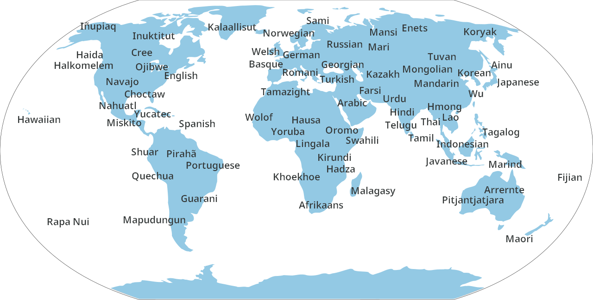

What is Basalo?
Basalo is an international auxiliary language (IAL): a language created by a person or group of people in order to give people across the world a common, universal way of communicating with each other. These languages are often very simple—in terms of grammar, vocabulary, and even sounds—to help make the language as easy to learn as possible.
Basalo, as an IAL, strives to represent three main tenets: to be simple and easy to learn, to use a vocabulary from all across the world, and to maintain cultural neutrality.
Many international auxiliary languages that use words from languages worldwide will restrict their vocabulary to a specific set of languages: Lingwa de Planeta is based on 10 languages, Baseyu on 15, and Pandunia on 21, just to name a few. Basalo, however, has no restriction on what languages are represented; there are over 150 unique languages that Basalo has a word from! This gives Basalo the unique advantage of being able to represent all cultures, leveling the playing field between communities big and small.
Here's a map showing just some of the languages Basalo already represents!

Community and development
Basalo has a dedicated community of learners and supporters in the official Discord server. In this server, people can learn and discuss Basalo, as well as suggest any changes or additions to the language. If you're interested in learning Basalo, or just want to check it out, anyone is free to join! Basalo is always growing and changing, and feedback is always appreciated.